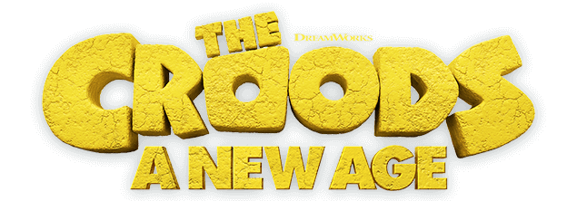
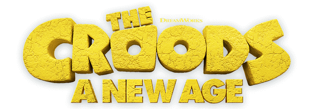

Croodarna har överlevt mängder av faror och katastrofer, från livsfarliga förhistoriska odjur till att se sin dotter bli vanvettigt förälskad i en ny pojkvän. Men nu står de inför något som verkligen kommer att skaka om deras flock ordentligt och få dem att omvärdera allt de hittills trott om världen: en annan familj. Croodarna behöver en ny plats att bo. Så den första förhistoriska familjen ger sig ut i världen, på jakt efter en säkrare plats att kalla sitt hem. När de upptäcker ett idylliskt paradis, omgärdat av en mur, som uppfyller alla deras behov, tror de att deras problem är lösta ... förutom en sak. En annan familj bor redan där: Bättremans.
Regi: Joel Crawford
Svenska röster: Tommy Nilsson, Frida Sandén, Jesper Adefelt, Göran Gillinger, Susanne Barklund, Iréne Lindh, Lizette Pålsson, Clara Folkebo, Jamil Drissi
 
